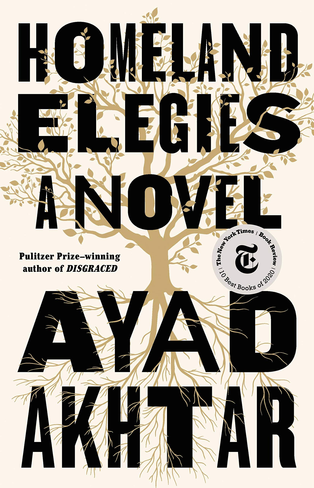
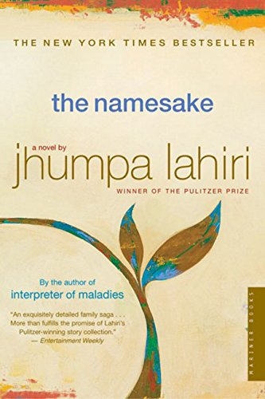

As an avid reader, I've read a lot of books over the years, but some books
really stand out as uniquely interesting, intruiging, or just comforting reads.
Checkout some of my favorite books below!







